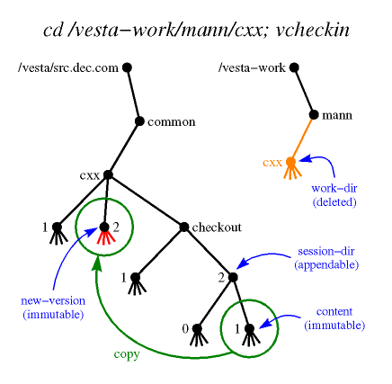

vcheckin - Check a new version of a package into the Vesta repository
vcheckin [-q] [-Q] [-v] [-f] [-m message | -M] [-s session-dir] [-S] [-c content | -C] [-n new-version] [-R repos] [-d dstrepos | -D] [[-w] work-dir] [-W]
In the most common usage, vcheckin is invoked from the checkout session's working directory, and no arguments are needed.
- Description
- Flags
- Message Entry
- Configuration
- Triggers
- Limitations
- Environment Variables
- See Also
- Author
See the vesta-intro man page's Terminology section for definitions of terms, and its Name Interpretation section for an explanation of how names are looked up.
The vcheckin command checks in a new public version of a package, binding the new package content that was created in a checkout session to the new version name that was reserved by vcheckout. It also ends the checkout session by deleting the session's working directory.
vcheckin will abort the checkin and print the following error message if any files in the working directory tree have been changed, renamed, or deleted since the most recent vadvance or vmake operation.
vcheckin: work-dir has been modified since last advanceThis safeguard is included to prevent inadvertent checkins of changes that have yet to be built. To proceed with the checkin, you should first run vmake; vadvance can be used instead of vmake, but if the changes in question are substantive, you may very well check in changes that fail to build successfully.
In more detail, vcheckin:
- Prompts the user to enter a change history message. (See the "Message Entry" section below.)
- Deletes the master stub new-version and rebinds its name, either to the immutable directory content, or (with the -C flag) to an empty immutable directory.
- Deletes the mutable directory work-dir.
- Sets the following attributes:
- On new-version
- old-version, session-dir, content, checkin-time, checkin-by, and message.
- On session-dir
- checkin-time and checkin-by.
Directory names used as attribute values are canonicalized to start with "/". The checkout-by attribute is set to the invoking user's global name and the creation-time attribute to the current date and time. The old-version attribute is copied from the corresponding attribute on session-dir, or from the master stub if there is no session-dir.
You must have read access to content, write access to the existing new-version stub, and write access to the parent directories of new-version and work-dir. The newly created version is owned by you, but has access permissions inherited from its parent directory.
In the presence of replication, the package may have been checked out from another repository. (See vrepl(1) and vmaster(1) for more information about replication and mastership.) As a convenience, if the new-version stub has a checkout-from attribute specifying a remote repository, vcheckin attempts to replicate new-version to that repository after checking it in. This behavior can be altered with the -d or -D flag.
vcheckin returns status 0 for success, 1 for parameter syntax errors, or 2 for more serious errors. (Note that if any of the trigger commands fail, vcheckin returns status 2.)
- -q
- Quiet; suppress printing out what is being done.
- -Q
- Query; print out what the command would do, but don't do it. Also suppresses prompting for the change history message.
- -m message
- Specify the change history message. If the message argument is "-", the user will be prompted to enter a message. (See the "Message Entry" section below.) If message is any other text, it will be used as the change history message without prompting the user. If neither the -m flag nor the -M flag is used, the default is "-m -" (although this can be changed with the [UserInterface]vcheckin_message configuration setting).
- -M
- Omit the change history message. (Note that if the new version reservation already has a message attribute, such as one added by vcheckout, vcheckin will not remove it. With newer versions of the repository, such a message will be preserved on the new version.)
- -s session-dir
- The session directory that was created at checkout time. If the name session-dir is unqualified (does not have "/", ".", or ".." as its first arc), it is interpreted relative to the site's default directory of packages, DefaultPackageParent. Defaults to the session-dir attribute of work-dir, if any.
- -S
- There is no session directory. Other flags whose default values depend on session-dir must be given explicitly, and the step of updating the session directory's attributes is omitted.
- -c content
- The content of the new version that is to be checked in. If the name content is unqualified, it is interpreted relative to session-dir, or to DefaultPackageParent if there is no session-dir. Defaults to the highest version number bound in session-dir, if any. That is, if there is a session-dir, it is searched for arcs consisting entirely of decimal digits, and the one with the highest value is chosen. If there are no such arcs, -C is taken as the default. Hint: You can "vcheckin -c 0" to abandon a checkout session by checking in a version identical to what you checked out.
- -C
- Check in an empty directory as the new version.
- -n new-version
- The name of the new version. A master stub by this name must exist. If the name new-version is unqualified, it is interpreted relative to the site's default directory of packages, DefaultPackageParent. Defaults to the new-version attribute of session-dir if any; otherwise to the new-version attribute of work-dir, if any.
- -w work-dir
- The mutable working directory. If you place this option last on the command line, you can omit the -w. If work-dir is unqualified, it is relative to DefaultWorkParent/user, where user is your local user name. Defaults to the current directory.
- -W
- There is no working directory. Other flags whose default values depend on work-dir must be given explicitly, and the step of deleting the working directory is omitted.
- -R repos
- Check in a working directory and session from repos instead of the default local repository. The repository is specified by host name and TCP port number in the format host:port. The :port portion may be omitted; it defaults to [Repository]VestaSourceSRPC_port.
- -d dstrepos
- Replicate new-version to the specified destination repository after checking it in. The repository is specified by host name and TCP port number in the format host:port. The :port portion may be omitted; it defaults to [Repository]VestaSourceSRPC_port. If neither -d nor -D is given, the default is taken from the checkout-from attribute on the new-version stub; if this attribute does not have a value, no replication is done.
- -D
- Do not replicate new-version to another repository after checking it in.
- -f
- Force; omit sanity checking. The directory session-dir must be of type session (that is, its type attribute must include this value), unless the -f or -S flag is given. The directory work-dir must have a nonempty checkout-time attribute, unless the -f or -W flag is given. The directory tree rooted at work-dir must not have been modified since content was created, unless the -f, -c, or -C flag is given. The new-version must initially be a checkout stub (a master stub with a nonempty checkout-time attribute), unless the -f flag is given. Even with -f, new-version must be a master stub.
- -v
- Displays extra information about triggers. Before executing any trigger commands, the environment variables used to provide information to them are printed. Also, each trigger setting is printed before the command is executed. This can be used to help debug trigger problems. When used with the query flag (-Q), the triggers are displayed in their sorted order without actually running them.
vcheckin's default behavior is to prompt the user for a change history message. If the EDITOR environment variable is set, the external editor program it specifies is invoked to edit the message. Otherwise, the message is read from standard input. A prompt is printed if the standard input is a terminal:
Enter change history message, terminated with ^D or . on a line by itself :If the standard input is not a terminal (e.g. it was redirected to a file or a pipe), no prompt will be printed, but the standard input will still be used as the change history message. (Note that when EDITOR is set, the external editor is invoked even if the standard input is not a terminal.)When using an external editor, the initial text will either be the checkout description entered with vcheckout, or "<enter change history message here>" if there is no checkout description. If the initial text is left unedited or the user enters an empty message, they will be asked for confirmation before completing the checkin operation:
Empty change history message. Continue (y/n)?This is the only chance to abort when EDITOR is set. (So if you change your mind and are using an external editor, exit the editor either with the message unedited or with an empty message.)The -m flag can be used to specify the change history message on the command line. The -M flag can be used to omit the change history message. In either of these cases, no external editor will be invoked, and the standard input will not be read.
The default of prompting for a change history message can be disabled with the [UserInterface]vcheckin_message configuration setting. However, this can be overridden on the command line with "-m -", which will always cause vcheckin to prompt for a change history message.
The following values are obtained from the [UserInterface] section of the Vesta configuration file (vesta.cfg).
- AppendableRootName
- The filename under which the global root directory of Vesta repositories is mounted. Ordinarily set to /vesta.
- MutableRootName
- The filename under which the local tree of mutable directories provided by Vesta is mounted. Ordinarily set to /vesta-work.
- DefaultPackageParent
- The default directory to put new packages in. Ordinarily a subdirectory of the appendable root, named with an Internet domain name belonging to the local site.
- DefaultWorkParent
- The default parent directory for mutable working directory trees belonging to individual users. Ordinarily the same as the mutable root.
- realm
- Global user names are formed by appending @realm to the local name.
- TimeFormat
- A format string for strftime(3) to produce time strings for Vesta attributes. A common setting is "%a %b %e %T %Z %Y".
- vcheckin_message
- A boolean configuration setting. Determines whether vcheckin will prompt the user for a change history message. If it is equal (without regard to case) to "yes", "on", or "true", or can be parsed as an integer that is non-zero, vcheckin will ask the user to enter a message (as if "-m -" had been given on the command line). If it is equal (without regard to case) to "no", "off", or "false", or can be parsed as an integer that is zero, vcheckin will not prompt for a message (as if the -M flag had been given). If not set, defaults to "true".
The following values are obtained from the [Repository] section of the Vesta configuration file.
- VestaSourceSRPC_host
- The host name of the default (local) repository.
- VestaSourceSRPC_port
- The default TCP port number for repositories.
Settings in the [vcheckin pre trigger] and [vcheckin post trigger] sections of the configuration file are used as commands to be run before and after the repository is modified. See the next section.
Users can configure commands in the Vesta configuration file (vesta.cfg) to be executed before and after vcheckin modifies the repository. Each setting in the [vcheckin pre trigger] section specifies a command to be run before any action is taken, and each setting in the [vcheckin post trigger] section specifies a command to be run after all actions are complete.
The value of each setting specifies a command to run. The names of the settings define the order in which these commands are run. The setting names are sorted as strings, but comparing embedded sequences of digits as decimal integers. (So, for example "foo_10_bar" will sort after "foo_2_bar".) The suggested naming convention for trigger settings is to start with an integer, follow with a descriptive name, and follow that with any other text. (This is based on the convention used for System V style init script links typically stored in /etc/rcN.d.)
Here's a simple example of how we suggest naming trigger settings, and how they are ordered for execution:
[vcheckin pre trigger] 100world = echo World! 9tada = echo Tada: 50hello = echo Hello,Because these all start with numbers, they will be executed in the order "9tada", "50hello", "100world". The output will look like this:% vcheckin /vesta-work/jsmith/foo Tada: Hello, World! Checking in /vesta/example.com/foo/3 Deleting directory /vesta-work/jsmith/fooTrigger commands are executed with system(3). On most operating systems this means "/bin/sh -c command", so simple in-line shell scripts can be used. (Note that each is executed in its own shell process, so environment variables set during one trigger command will not propagate to subsequent ones.)If any of the commands in the [vcheckin pre trigger] section exit with error (non-zero) status or are terminated by a signal (e.g. segmentation fault, abort), vcheckin will exit without performing the checkin.
The commands in the [vcheckin post trigger] section will only be executed if the checkout is successfully completed. If vcheckin fails with an error, the commands in the [vcheckin post trigger] section will not be executed.
Note that all the trigger commands (both pre and post) are executed sequentially. Once a trigger command is started, nothing else happens until it completes. If any of the pre trigger commands runs forever, vcheckin will not perform the checkin. If any of the post trigger commands runs forever, vcheckin will not complete. (In other words, a trigger command that hangs will cause vcheckin to hang.) If any of the pre or post trigger commands exit with error status or are terminated by a signal, vcheckin will exit without running any more commands from those sections. (In other words, a trigger command that fails will prevent further trigger commands from being run.)
If the the query flag (-Q) is given, the trigger commands will not actually be run.
Information about what vcheckin is going to do or has just done is provided to the trigger commands through the following environment variables:
- VESTA_TOOL
- The name of the Vesta tool the trigger command has been invoked from. (For vcheckin, this will always be "vcheckin".)
- VESTA_REPOS
- The local repository (host:port) vcheckin communicates with (either the default from the configuration file or the one specified with the -R flag.
- VESTA_WORK_DIR
- The full path to work-dir. Set to the empty string if -W was used.
- VESTA_OMIT_WORK
- Set to 1 if the -W flag was given, set to 0 otherwise.
- VESTA_SESSION_DIR
- The path to the session directory to be use during checkin (typically to find the snapshot to use as the new version), either automatically determined or specified with the -s flag). Set to the empty string if -S was used.
- VESTA_OMIT_SESSION_DIR
- Set to 1 if no session directory will be used (if the -S flag was given), set to 0 otherwise.
- VESTA_CONTENT
- The full path to content. Set to the empty string if -C was used.
- VESTA_OMIT_CONTENT
- Set to 1 if the new version will have no content (if the -C flag was given), set to 0 otherwise.
- VESTA_NEW_VERSION
- The path to the new version being checked in (either automatically determined or specified with the -n flag).
- VESTA_OLD_VERSION
- The path to the old version of the version being checked in. This is determined from the content being checked in and may be different from the old-version attribute on the version reservation stub set by vcheckout.
- VESTA_DEST_REPOS
- The repository to which the new version will be replicated, if any (either automatically determined or specified with the -d flag). Will be set to the empty string if no replication is to be performed.
- VESTA_OMIT_DEST_REPOS
- Set to 1 if no replication of the new version will be performed (if it was no checked out from a remote master repository or if the -D flag was used), set to 0 otherwise.
- VESTA_MESSAGE
- The checkin message, or the empty string if there is no checkin message.
- VESTA_OMIT_MESSAGE
- Set to 1 if there is no checkin message (if the -M flag was given or [UserInterface]vcheckin_message was used to disable checkout messages), set to 0 otherwise.
- VESTA_QUIET
- Set to 1 if the quiet flag (-q) was given, set to 0 otherwise.
- VESTA_FORCE
- Set to 1 if the force flag (-f) was given, set to 0 otherwise.
(Note that the environment variables are the same for both the pre and post trigger commands.)
Here are some examples using these environment variables:
[vcheckin pre trigger] // Force users to describe all checkins 50force_message = if [ $VESTA_OMIT_MESSAGE -eq 1 -o -z "$VESTA_MESSAGE" ]; then echo "Policy requires a checkin description"; exit 1; fi [vcheckin post trigger] // Replicate all new checkins to known peer repositories so that // they're immediately available 50repl_checkins = for r in `vgetconfig UserInterface DefaultHints 2> /dev/null`; do vrepl -s $VESTA_REPOS -d $r -e+ $VESTA_NEW_VERSION; doneIf the verbose trigger flag (-v) is given, these environment variables will be printed, and each trigger command will be printed before executing it. This can be useful for debugging trigger problems. If both verbose trigger flag and the the query flag (-Q) are given, the triggers are displayed in their sorted order without actually running them. This can be used to find out what trigger commands are configured without actually running them.
It is annoying when vcheckin deletes the current directory, which is what happens in the default case; you tend to get messages like "Stale NFS file handle" from the shell afterwards. Here is a csh alias that avoids the problem by automatically changing to the parent directory after a successful vcheckin:
alias vcheckin "pushd .. > /dev/null ; pushd > /dev/null ; \ \vcheckin \!* || pushd > /dev/null ; popd > /dev/null"
- VESTACONFIG
- If set, specifies the Vesta configuration file to be used. See vesta.cfg(5).
- EDITOR
- If set, specifies the editor to use for editing the change history message.
vesta-intro(1), repos-ui(1), vadvance(1), vmake(1), vesta.cfg(5)
This page was generated automatically by mtex software.